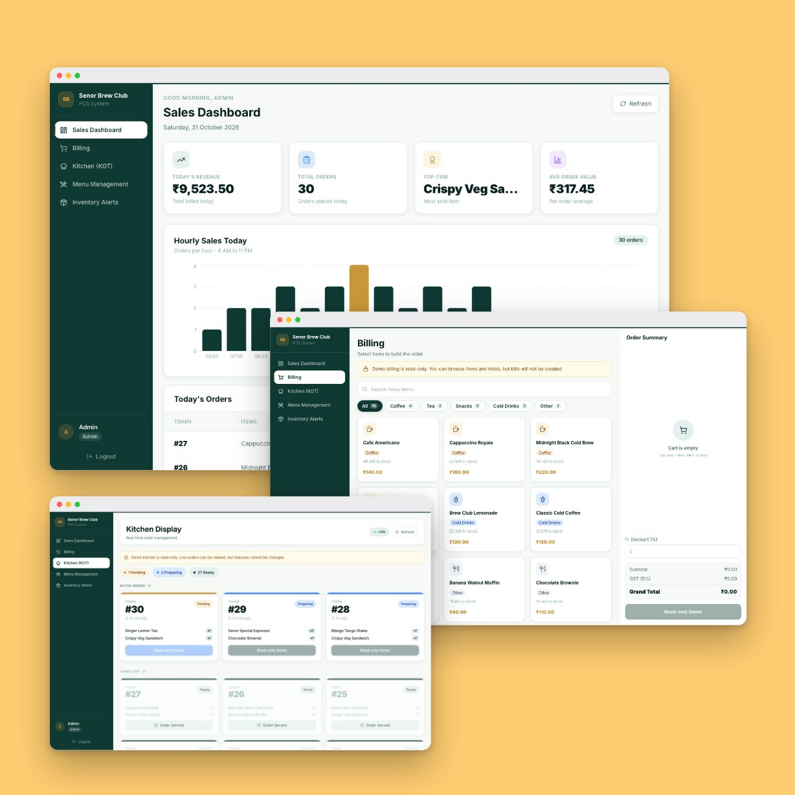

Senor Brew Club POS
A web-based point-of-sale system built for a café. Staff take orders at the counter and the kitchen sees them instantly, bills handle GST and discounts, and managers get hourly sales and inventory alerts. Admin, Counter and Kitchen each have their own view. The read-only demo may take a moment to wake up.
Try the live demo